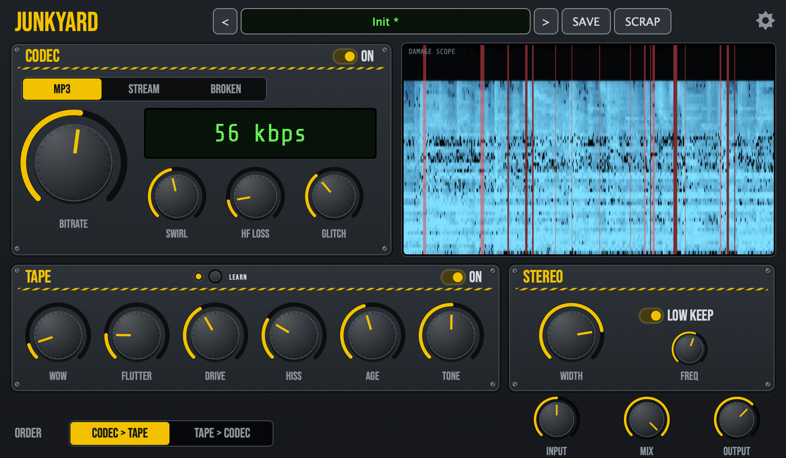

JUNKYARD
A free audio plug-in that wrecks your sound with lossy codec damage and tape wear.

Mac
Open the installer, click through, then restart your DAW.
Windows
Unzip, copy the Junkyard.vst3 folder into C:\Program Files\Common Files\VST3, then restart your DAW.